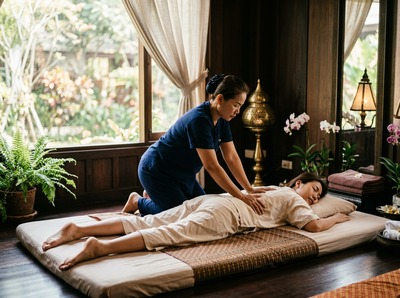

Thai massage in the West End attracts a diverse crowd: students from the University of Glasgow, professionals in the creative and media industries, long-term residents in the Victorian tenements of Hyndland and Dowanhill, and the many people who simply choose to live here because the area has a character unlike anywhere else in the city.
The West End is known for its leafy streets, independent cafes, Kelvingrove Park, and Byres Road's mix of bookshops and bistros. It is also a place where people tend to take their health seriously. That makes it a natural fit for Serendipity Massage Therapy and Wellness.
Serendipity is based on Hope Street in Glasgow City Centre. It is a short, easy journey from the West End by subway.
For West End residents who work long hours at a desk — or spend their days on their feet — regular massage can tackle the strain that builds quietly over time. Tight shoulders, lower back tension, and poor sleep are common results of that kind of pressure.
Serendipity is a professional team practice. Every therapist is trained to a consistent standard using techniques developed by head therapist Jariya Malone.

Whether you are fitting in a session between university commitments, winding down after a working week, or investing in your physical health, Serendipity is easy to reach from the West End. You can book your session online and secure a time that fits around your schedule.
Serendipity offers a full range of treatments. There are options to suit first-time visitors and regular clients alike.
The easiest route is by Glasgow Subway. From Hillhead station on Byres Road, take the subway one stop to Buchanan Street. Serendipity's address on Hope Street is a short walk from there. The journey takes around ten minutes, with trains running every four minutes at peak times.
Kelvinbridge station is another option and gets you into the city centre just as quickly. Several bus routes along Great Western Road and Sauchiehall Street also connect the West End with Hope Street.
If you prefer to walk, the route from the bottom of Byres Road to Hope Street takes around twenty to twenty-five minutes along Sauchiehall Street.
Serendipity is based at Floor 1, Suite 50, Central Chambers, 93 Hope Street, Glasgow G2 6LD. Every therapist is trained to the same standard, using techniques developed by head therapist Jariya Malone.
That means you get the same quality of care on your first visit as you do on your tenth.
For West End residents dealing with postural strain, chronic stress, or sports-related tension, Serendipity is built around real physical results. This is not a drop-in spa. Sessions are tailored and grounded in sound technique. You can arrange your appointment online ahead of your visit.
By subway, the West End is around ten minutes from the city centre. From Hillhead station on Byres Road, take the subway to Buchanan Street, then walk to Hope Street. Serendipity is at Central Chambers, 93 Hope Street, G2 6LD.
The Glasgow Subway is the fastest option. Hillhead and Kelvinbridge stations both reach the city centre in around ten minutes. Services run every four minutes at peak times. Several bus routes along Sauchiehall Street and Great Western Road also serve the Hope Street area if you prefer to travel above ground.
Same-day bookings are available subject to therapist availability. The easiest way to check and secure a same-day appointment is through the online booking system. It is worth booking ahead where you can — evening and weekend slots fill up quickly.
For university staff, creative professionals, and remote workers at a desk all day, traditional Thai massage is a strong choice. It uses assisted stretching and acupressure to release tension in the neck, shoulders, and back. For those who are active in Kelvingrove Park or nearby gyms, sports massage supports recovery and helps prevent injury.
For current hours and availability, check the online booking system or call the studio on 0141 673 6630. Serendipity offers appointments to suit working schedules, including evening sessions for those coming in from the West End after work.